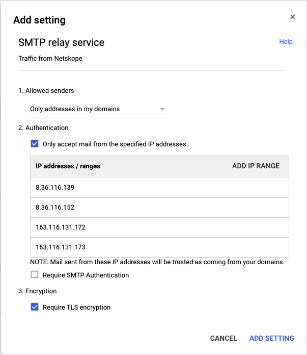

Send traffic from Netskope back to Gmail
Netskope offers a loopback solution to send traffic from the Netskope SMTP proxy back to the Gmail server.
To enable this solution, you must configure the following:
In your Netskope tenant, configure Gmail as the next hop. For detailed instructions, see Configure the Gmail server as the Next Hop in the Netskope tenant.
In the Google admin console, configure the Netskope SMTP Proxy and then configure content compliance to send traffic from Gmail to Netskope. For detailed instructions, see the sections, "Configure Netskope SMTP Proxy in Google admin center" and " Configure content compliance to send traffic from Gmail to Netskope" in Configure Netskope SMTP Proxy with Gmail.
In the Google admin console, configure SMTP relay service so that Gmail can accept traffic from Netskope. For detailed instructions, see Configure SMTP relay service to send traffic from Netskope back to Gmail.
Configure the Gmail server as the Next Hop in the Netskope tenant
Follow the instructions up to step 4 in the "Configure the Gmail server and the upstream MTA in the Netskope tenant" section of Configure Netskope SMTP Proxy with Gmail.
In the Next Hop section, specify the Gmail server's IP/FQDN as smtp-relay.gmail.com and Port as 587. Click Save.
Configure SMTP relay service to send traffic from Netskope back to Gmail
Note
When using the SMTP relay service, Gmail has a limit of 10,000 emails that can be sent over a 24-hour period to the relay service.
For more information about SMTP relay service in Gmail and the limitations, refer to the Gmail support article.
On the Settings for Gmail page, click Advanced settings.
On the General Settings page, go to the Routing section.
Mouseover SMTP relay service and click Add Another to add a new entry.
In the Add setting dialog box, set the following:
Under step1, Allowed senders, select Only addresses in my domains.
Under step2, Authentication, select Only accept mail from the specified IP addresses. Click Add IP range to add the list of IP addresses of Netskope SMTP proxy servers in CIDR notation that will be sending traffic to the Gmail server.
For a complete and updated list of IP addresses, see Netskope Email DLP (SMTP) List for Allowlisting.
Unser step 3, Encryption, select Require TLS encryption. Click Add Setting.